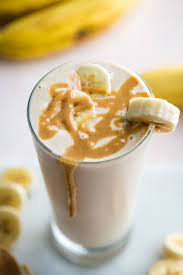

Peanut butter banana smoothie

Description:
Breakfast, lunch, dessert, or snack time, any time's the right time for this delicious banana smoothie. With hundreds of ratings and reviews , this easy smoothie recipe is a 5-star favorite, and it's ready in less than 5 minutes.
Ingredients:
- 2 bananas, broken into chunks
- 2 cups milk
- 1/2 cup peanut butter
- 2 tablespoons honey ,or to taste
- 2 cups ice cubes
Steps
Optional:put the bananas in the freezer for 10 minutes
- Place bananas, milk, peanut butter, honey, and ice cubes in a blender; blend until smooth, about 30 seconds.
Home